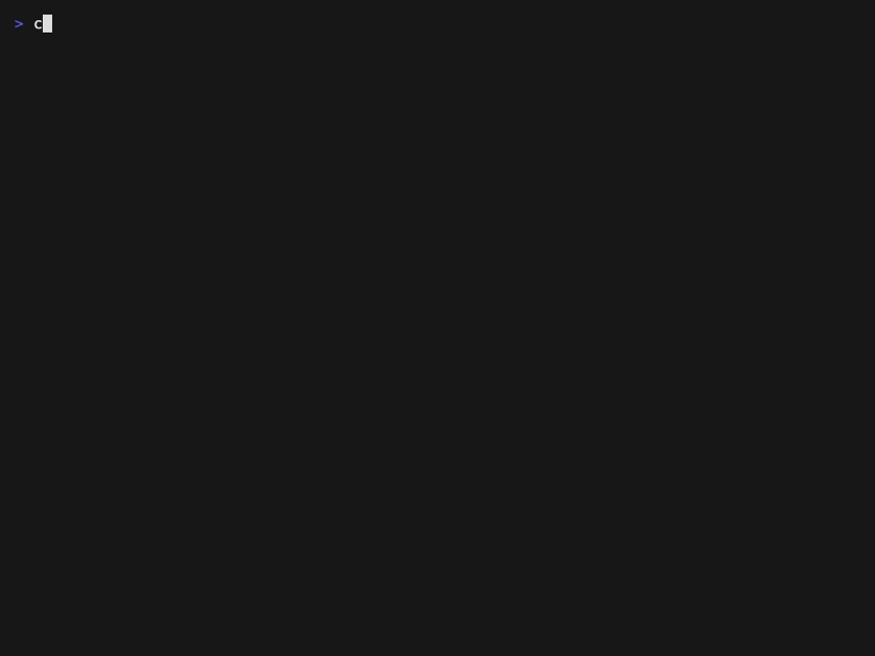

local dev for a distributed stack
curl -fsSL https://raw.githubusercontent.com/pinkynrg/crew/main/install.sh | sh
Zero dependencies · macOS & Linux · MIT on GitHub

the config file
crew config is a visual editor: pick a service's folder and crew fills in the mechanical parts it can read from your package.json, lockfiles and .envs — type, start command and env-file path. The URLs are yours to add: the service's local URL/port, and its deployed host for each environment. Out comes one readable config.json, committable, no secrets.
what it holds
Committable as-is: no secrets, no machine paths. Those live in a gitignored local.json beside it.
{ "services": { "web": { "path": "web", "type": "frontend", "tasks": { "start": "dotenv -e {envfile} -- npm run dev" }, "env": ".envs/{env}.env", "match": { "your-env": "web.example.com" }, "local": "http://localhost:3000" }, "api": { "path": "api", "tasks": { "start": "uvicorn app:main --reload --env-file {envfile}" }, "env": ".envs/{env}.env", "match": { "your-env": "api.example.com" }, "local": "http://localhost:4000" }, "auth": { "path": "auth", "tasks": { "start": "godotenv -f {envfile} go run ." }, "env": ".envs/{env}.env", "match": { "your-env": "auth.example.com" }, "local": "http://localhost:4500" } } }
why not docker
On is local, off is remote. Flip a service on and crew runs it locally and rewrites every peer that talks to it to point at your localhost. Flip it off and it stays on its deployed environment, callers untouched. The slice you run is just which switches are on — one service, or the whole stack.
Tap a service to flip it — the URLs and wiring update live.
Docker Compose has no equivalent to that switch: a service is in the compose file or it isn't, and pointing at the deployed one is a manual env edit — so you run the whole graph locally or maintain a second file full of stubs, and either drifts from production. crew reads the wiring from the .env files you already ship, so there's nothing to keep in sync.
| crew | Compose | Tilt | mirrord | overmind | |
|---|---|---|---|---|---|
| Runs natively, no containers | ✓ | ✕ | ✕ | ✓ | ✓ |
| Uses your real remote stack | ✓ | ✕ | ✕ | ✓ | ✕ |
| No daemon or cluster | ✓ | ✕ | ✕ | ✕ | ✓ |
| No parallel config to keep | ✓ | ✕ | ✕ | ✕ | ✕ |
Columns are the representative tool of each family. crew sits between process-runners (overmind, foreman, mprocs) and remote-wiring tools (mirrord, Telepresence): the native-slice-plus-real-remote of the latter, with none of the cluster, daemon, or containers — just URL swaps in the .env files you already have.
Assumes each service ships at least one environment file with its peers' URLs, plus a deployed host those point at. That's what crew borrows for the services you leave off. Nothing deployed to point at? A full-stack tool like Compose fits your case better.
questions
Short version: crew reads your env files and rewrites a throwaway copy — it never edits your repo, and there are no secrets in the committable config.
.env files?No. It reads your env file and writes a wired copy to ~/.config/crew/tmp/<service>.env (URLs swapped to localhost for the peers you're running), passes that path to your start command via {envfile}, and deletes it on teardown. Your checkout and its committed env files are never touched.
In your own env files, same as today — crew only reads them. The committable config.json holds no secrets; machine-local bits (services dir, your editor, remembered selection) live in a gitignored local.json. The temporary wired copy under ~/.config/crew/tmp/ is the only materialized secret, and it's regenerated per run and removed on exit.
Then the services you left off are unreachable, exactly as if you called that deployed environment directly. crew doesn't proxy or cache; turn those services on to run them locally, or wait for the environment to recover.
No — that's the whole point. Run one service or all of them; whatever you don't run stays on its deployed env, wired in automatically.
macOS and Linux. It's POSIX-only — teardown relies on process groups (setsid / kill(-pgid)) — and needs Node ≥ 18.
get started
$ curl -fsSL https://raw.githubusercontent.com/pinkynrg/crew/main/install.sh | sh
One static binary, so it lands instantly. Or grab it from GitHub Releases.
$ crew config
A two-pane visual editor: pick a folder and crew prefills each service (path, start command, type), or write the config.json yourself, as shown above.
$ crew start env=your-env
Pick a connected slice in the dependency graph (click or arrow keys); crew runs those locally, wires them together, and leaves the rest on their resolved remote env.